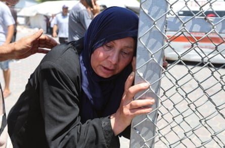

Eighteen people have been killed in an Israeli strike targeting Palestinian police distributing flour in a market in the central Gaza city of Deir al-Balah, medical officials have said.
The reported strike, on Thursday afternoon, is the latest in a series of air attacks, shootings and bombardment by the Israel Defense Forces (IDF) that has killed hundreds of desperate civilians seeking aid in the devastated Palestinian territory.
It appears to have targeted members of a security force set up by the Hamas-led interior ministry to target looters and merchants who sell stolen aid at high prices.
The unit, known as Sahm, or Arrow , confiscates stolen aid which it then distributes. Witnesses said many of the casualties were ordinary civilians who had gathered to receive sacks of flour from a warehouse near the Birka crossroads in the northern part of Deir al-Balah.
The dead included a child and at least seven Sahm members, according to the nearby al-Aqsa Martyrs hospital, where casualties were taken. There was no immediate comment from the Israeli military.
Food has become extremely scarce in Gaza since a tight blockade on all supplies was imposed by Israel throughout March and April, threatening many of the 2.3 million people who live there with a “critical risk of famine ”.
Since the blockade was partly lifted last month, the UN has tried to bring in aid but has faced major obstacles, including rubble-choked roads, Israeli military restrictions, continuing airstrikes and growing anarchy. Hundreds of trucks have been looted by armed gangs and by crowds of desperate Palestinians.
The strike in Deir al-Balah on Thursday night came shortly after Israel closed crossings into northern Gaza , cutting the most direct route for aid to the parts of the territory where the humanitarian crisis is most acute.
For most of the war, aid in Gaza was distributed mainly by the UN and other international humanitarian organisations, but Israel said Hamas diverted and sold supplies to finance its military and other operations.
A mourner during the funeral of Palestinians who, according to the Gaza health ministry, were killed in the strike in Deir al-Balah on Thursday.Photograph: Ramadan Abed/Reuters
The UN and other aid groups deny the charge and say their monitoring of their distribution networks is robust. Israel has backed an American private contractor, the Gaza Humanitarian Foundation (GHF), which started distributing food boxes in Gaza last month, attracting crowds of tens of thousands to its four hubs.
To reach the GHF sites, which open intermittently and unpredictably and often at night, Palestinians must cross rubble-strewn roads and Israeli military zones where witnesses say troops often fire on them with mortars, tanks and machine guns. Health officials say hundreds of people have been killed and wounded seeking aid in recent weeks and medical records from independent NGOs working in Gaza, seen by the Guardian, confirm hundreds of lethal injuries from bullets and some from shelling.
The Israeli military says it has only fired “warning shots” at individuals it believes are a threat to its forces. Israel has continued to allow a smaller number of aid trucks into Gaza for UN distribution, with about 70 entering the territory each day on Monday and Tuesday.
The World Health Organization said on Thursday it had been able to deliver its first medical shipment since 2 March, with nine trucks bringing blood, plasma and other supplies to Nasser hospital, the biggest hospital still functioning in southern Gaza.
Humanitarian officials in the territory say the amount of aid is “grossly inadequate”.
The IDF has targeted the Hamas-run police in Gaza since the early months of the conflict, which was triggered by a Hamas attack on southern Israel in which militants killed 1,200, mostly civilians, and took 251 hostage.
During the 12 days Israel was fighting Iran, more than 800 Palestinians were killed in Gaza , either shot as they desperately sought food in increasingly chaotic circumstances or in successive waves of Israeli strikes and shelling.
The overall death toll in Gaza in the 20-month conflict has reached 56,259 , mostly civilians.
Pedro Sánchez, Spain’s prime minister and an outspoken critic of Israel’s offensive, on Thursday became the most prominent European leader to describe the situation in Gaza as a genocide.
Israel vehemently denies the allegation of war crimes and genocide, which it says are based on anti-Israel bias and antisemitism.
- AP contributed to this report